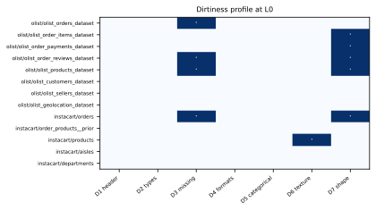
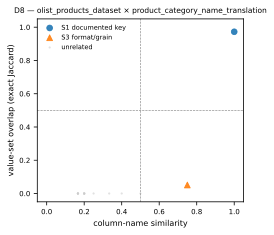
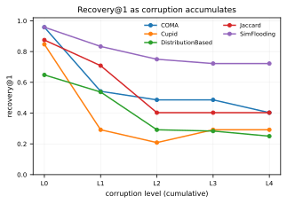
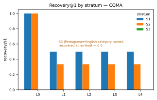

Milestone 2 — datasets, exploratory analysis and the ground truth they supply · SWSN 2026/27 · Ashley Jurga, Paweł Laszczyk, Jakub Laskowski, Jakub Górniak · 2026-11-08
Valentine (ICDE 2021) is benchmarked on TPC-DI, Open Data, ChEMBL, WikiData and Magellan —
curated sources whose columns are named in one language, in one convention, by one
publisher. Schemas arriving from Kaggle are not like that: the same concept is written
selling_price on one upload and Price on another, values are
formatted four ways in one column, and there is no documentation to say which columns
correspond. Our question for this milestone is the measurement one that has to come before
any improvement: when a relationship is known to exist, does Valentine find it — and
which kind of mess stops it?
Three classes, because one kind of ground truth cannot answer three different questions. C-doc — documented multi-file Kaggle datasets, where the publisher states which columns correspond; this gives exact ground truth but only for clean, name-identical keys. C-nat — independent uploads in the same domain, annotated by hand; no documentation exists there, which is the point. C-syn — the C-doc tables degraded along a declared ladder, with ground truth preserved through recorded rename maps; this is the only class that isolates which dimension of dirt breaks which matcher.
Every candidate passed a five-part admission gate (G1 provenance, G2 not in Valentine's benchmark, G3 pairing, G4 ≥3 of D1–D7 present, G5 tractability). Eight datasets were admitted across four domains: Olist (e-commerce, CC BY-NC-SA 4.0), Instacart (grocery, CC0), Craigslist Cars and Cardekho (used cars, CC0 / open database), Airbnb NYC and Melbourne Housing (housing), Heart Failure and Diabetes (health). MovieLens was dropped: its slug now returns HTTP 403. Eighteen table pairs are declared, each with a rationale.
Seven per-column dimensions were profiled (D1 header noise, D2 type instability, D3 missingness and sentinels, D4 format heterogeneity, D5 categorical noise, D6 cardinality and texture, D7 distribution shape), plus D9, a documentation-fidelity audit that only the documented datasets make possible.
The first finding is negative and it shapes everything after. Olist exhibits D3, D5, D7; Instacart D3, D6, D7. D1, D2 and D4 are absent from both. Real Kaggle data is clean in exactly the dimensions a schema matcher is most sensitive to: headers are snake_case, inferred types are stable, and every column uses one format. The mess this project is about is concentrated in free-text review columns and, above all, across tables — the same concept written differently on each side — which no per-column profile can see.
The D9 audit found no gaps at all: every documented column is present, nothing undocumented, and all twelve documented foreign keys resolve, on tables up to 32 million child rows. That is the precondition for the whole design — if the documentation did not hold, ground truth derived from it would be worthless.

days_since_prior_order is null for every user's first order.To see what the per-column profile cannot, every candidate column pair across two tables was placed in a name-similarity × value-overlap plane (D8). Documented correspondences should land in the easy quadrant (Q1) and traps in the misnamed one (Q3); a correspondence that lands in Q2 — names disagree, values agree — is one a name-based matcher cannot reach without help.

products ×
category_translation. The documented key sits at (0.99, 0.98) — easy. The
genuine translation product_category_name ↔
product_category_name_english sits at (0.72, 0.03): names
agree, values share almost nothing, because one side is Portuguese and the other
English.Recovery@1 — the share of documented correspondences a matcher places first for their source column — on the unmodified data. Pairs whose target table has fewer columns than k are flagged degenerate and excluded: with two target columns a top-3 contains everything, and scoring that as success would have flattered every matcher equally.
| matcher | L0 | L1 header | L2 +values | L3 +noise | L4 +semantic |
|---|---|---|---|---|---|
| COMA | 0.958 | 0.431 | 0.431 | 0.431 | 0.431 |
| SimilarityFlooding | 0.958 | 0.833 | 0.750 | 0.722 | 0.722 |
| Jaccard | 0.875 | 0.708 | 0.403 | 0.403 | 0.403 |
| Cupid | 0.847 | 0.292 | 0.208 | 0.292 | 0.292 |
| DistributionBased | 0.648 | 0.537 | 0.292 | 0.283 | 0.250 |
Table 1. Recovery@1, cumulative ladder, 12 documented table pairs, 5,000-row join-aware samples, seed 42. 300 runs per mode; DistributionBased raised in 10 of its 60 runs and is excluded from cross-matcher comparison.
Because the raw data lacks D1/D2/D4, those dimensions were introduced deliberately — one dimension per level, one-sided (table A corrupted, table B clean), ground truth composed through the recorded rename map. Two modes answer different questions and the distinction matters: attribution applies only each level's own operators to the original frame, so levels do not stack; cumulative applies levels 0..n in order, giving the degradation curve in Table 1 and Figure 3.


Header noise costs more than every other dimension combined. COMA falls from 0.958 to 0.431 the moment columns are renamed, abbreviated and translated, and the value-format level after it adds nothing — once the names are gone, the name channel was the only signal it had that mattered. Value-based matchers tell the complementary story: Jaccard is unaffected by renaming and loses its recovery at L2, when numbers acquire thousands separators and decimal commas. The two failure modes are almost disjoint, which is the strongest available argument that a matcher using only one channel cannot be robust.
The stratified view is where the project's case lives: the one genuinely cross-lingual correspondence is recovered by no matcher, at no corruption level — 0.0 throughout. Every other stratum recovers; this one does not. It is not a noise problem, a threshold problem or a sampling artefact: the name channel ranks the identical-name column first, correctly, and the value channel sees disjoint vocabularies. Neither channel can promote it, and no amount of tuning changes that.
src/swsn/extension/ already map one-to-one
onto the ladder dimensions, so each can be ablated against the level it repairs.
Artifacts: data/datasets.yaml (registry and 18 pairs) ·
ground_truth/schema/ (transcribed, cited) · evaluation/protocol.yaml
(frozen design) · evaluation/results_{attribution,cumulative}.csv (600 runs) ·
notebooks/00–06 (all executable) · docs/findings.md (§6 findings,
including four profiler defects found and fixed).
Reproduce with make setup data triage bench figures eda.